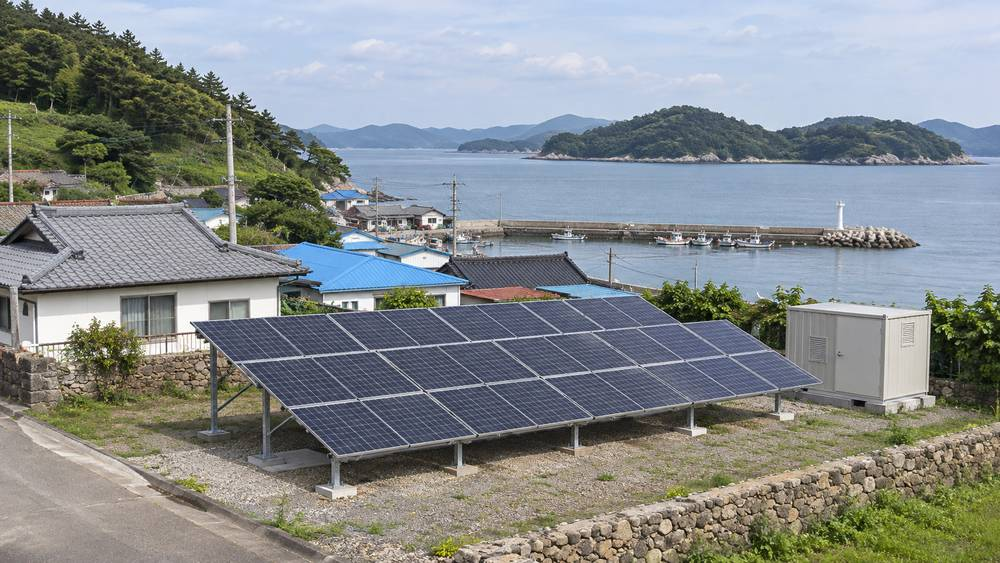

지역
여수시, 유인도서 40곳 에너지 전환 계획 공개…2027년부터 섬 공공부지에 태양광

한국전력 계통과 이어진 섬 25곳·이어지지 않은 섬 15곳으로 나눠 이행 방안 마련
전남 여수시가 사람이 사는 섬 40곳의 전력 공급을 재생에너지 중심으로 바꾸는 '도서지역 에너지 전환, 2030 RE40' 계획을 11월 11일 공개했다. 40곳은 육지 송전설비로 한국전력 계통과 이어진 계통 연계 도서 25곳과, 육지 계통과 직접 이어지지 않아 디젤발전 등 독립전원을 쓰는 계통 미연계 도서 15곳으로 나뉜다.
시는 두 유형에 맞춘 이행 방안에서 지금 하고 있는 재생에너지 주택지원사업과 융복합지원사업을 계속 확대하기로 했다. 중장기로는 정부의 섬종합발전계획과 도서지역 에너지 전환 공모가 추진되면 참여해, 재생에너지와 에너지저장장치(ESS)를 연계한 기반 시설을 단계적으로 늘린다. 시는 디젤 발전 의존도가 낮아지면 온실가스와 대기오염물질 배출이 줄고, 섬 주민의 전기요금 부담과 정주 여건도 나아질 것으로 기대한다.
시는 같은 자료에서 여수산단 RE100 대응과 해상풍력 발전사업도 이어 추진하겠다고 밝혔다. 공공부지 태양광 설치와 주민참여형 햇빛소득마을 조성은 2027년부터 섬에서 시작하며, 시는 이를 통해 에너지 자립 기반을 해마다 쌓아 간다는 계획이다.
출처: 여수시 2026-11-11 여수시청 거북선여수 보도자료 '도서지역 에너지 전환, 2030 RE40' 추진 원문 보기
출처: 뉴스깜 2026-11-11 이기장 원문 보기
시민이 만들고 지역이 소유하는 에너지 전환제4섹터 방식 시민주도 지역에너지 공공개발